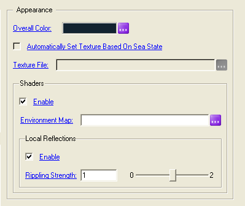

3. Application Configuration File instances
4. View Dependent Optics and Shading
4.1. Environment Mapped Bump Mapping
4.2.1. Other Sources of Illuminating the Ocean
5.1. Setting the Ocean's LOD Switch Distances for an EMBM Surface
5.2. The Impact Global and Local Reflections Have on Frame Rate
5.3. Choosing the Best Spatial Resolution, High Sea States, and the Choppy Waves Factor
5.4. NVIDIA Quadro Based Graphics Card and 3D Profile Setting
This sample illustrates the use of Vega Prime Marine. It defines the class myApp, which is derived from vpApp, and overrides the vpApp::onKeyInput() method to allow for additional keyboard input. By default the sample loads vpmarine_simple.acf, which defines the ocean and wave generator, as well as a Arleigh Burke definition, complete with an angle bow wave, stern wake, and hull wake. The sample allows the user to:
The sample also provides keys for modifying wave parameters for the ocean.
The description of keyboard inputs and functionality of vpApp can be found in $(PRESAGIS_VEGA_PRIME_5)\docs\vegaprime\html\classvpApp.html. Additional keyboard inputs for this sample are as follows:
While this sample employs an observer-centered ocean, you can create four different types of oceans in Vega Prime Marine. The following table illustrates the features that each one supports.
Feature |
Observer-Centered |
Fixed Location |
Surf Zone |
Technique |
Generates 3D Procedural Geometry |
||||
Uses Existing Database Geometry |
||||
Can Account for the Curvature of the Earth |
||||
Boundless Ocean |
||||
Bounded Extents |
||||
Infinitely Deep Water Waves |
||||
Shallow Water Waves |
||||
Open Architecture |
||||
Can Perform Surface Property Queries (height, normal, velocity, etc.) |
||||
Can Align to an Arbitrary Shoreline |
||||
Breaking Waves |
||||
Environment Mapped Bump Mapped Surface ¹ |
||||
Global Reflections |
||||
Local Reflections |
||||
White Caps |
||||
Foam |
||||
Back Wash |
||||
Wakes Conform to Ocean Surface ² |
||||
Isector Support ³ |
¹ This feature is only available when the ocean employs the module’s native wave generator.
² Because a Technique ocean does not generate 3D procedural geometry, wakes conform to the surface of the database. All marine effects (bow waves and wakes) as well as the marine ship motion strategy are seamlessly integrated to function correctly, regardless of the ocean type.
³ Because a Technique ocean does not generate 3D procedural geometry, the target of the isector must be the scene; there is no underlying ocean geometry to perform intersection tests on. Nevertheless, intersection tests with the database will yield accurate hit results (with respect to the ocean surface) at the nominal plane of the ocean (i.e., the ocean at rest).
| readme.html | - | Html documentation for the sample |
| vpmarine_simple.acf | - | Application Configuration File |
| vpmarine_simple.cpp | - | Main C++ source code file. Contains the myApp class and main function. |
| vpmarine_simple.vcproj | - | Visual Studio project for the application |
| makefile | - | Make file to build the application under Unix. |
| OceanObserverCentered | - | An observer centered ocean. |
| myMarineWaveGeneratorFFT | - | The wave generator used by the OceanObserverCentered ocean. |
| shipDef | - | The ship definition for the Arleigh Burke. |
| myMarineShipMotionStrategy | - | The ship motion strategy that animates the three-dimensional response of the ship (heave, pitch, and roll) to the vpMarineOcean waves it encounters. |
| myMarineFxBowWaveAngled | - | The bow wave for the Arleigh Burke. |
| myMarineFxSternWake | - | The stern wake for the Arleigh Burke. |
| myMarineFxHullWake | - | The hull wake for the Arleigh Burke. |
Note: The ship definition for the Arleigh Burke specifies a beam of 9 meters. The beam represents the extreme width of the ship (which, for an Arleigh Burke is 20 meters), so at first glance this may seem confusing considering the width at the origin is 17 meters. The reason for this is that the beam is used in the computations for modeling the bow wave, and the bow frame of the Arleigh Burke is very narrow and does not extend out to the beam in a straight line.
The optical character of the ocean water surface is, essentially, a nearly complete specular reflector of a fraction of the light incident on it, while transmitting or refracting the rest of the light. There is no diffuse reflectivity for water surfaces. Other factors such as whitecaps and upwelling light from below the surface add to the lighting process.
Vega Prime Marine models five optical phenomena associated with the ocean environment:
Vega Prime Marine employs programmable vertex and fragment shaders to render realistic, view dependent optics (i.e., the reflection, refraction, and propagation of light) and shading effects. The ocean's aesthetics are congruent with the corresponding time of day as well as the elevation of the dominant celestial body (the sun or moon), such that:
When shaders are enabled (via the vpMarineOcean's API or LynX Prime panel), Vega Prime Marine renders the view dependent optics and shading differently, depending upon whether the wave generator produces a surface that is periodic or not.
If the wave generator produces a surface by tiling a periodic, regular grid (such as the vpMarineWaveGeneratorFFT), then the module employs Environment Mapped Bump Mapping (EMBM) to render the water surface. EMBM is a process of introducing apparently high detail to a surface through two textures without increasing the geometric complexity. The first texture does not represent color or transparency, but instead represents perturbations of the surface normals to alter lighting. This texture is based on a high-resolution normal map applied across and within facets of the geometry. The high resolution normal map must be periodic for tiling purposes, and is produced by the wave generator. The second texture is the environment map. It represents the scene surrounding the ocean. When the ocean is rendered, both of these textures are used to compute accurate reflections of the environment.
If the wave generator produces a surface that is not periodic, then the rendering engine produces a surface that is textured (with textures that provide for differentiable and recognizable sea states), and lit via per-vertex sun glint. This scenario would apply to surf zone oceans and oceans that employ user-defined wave generators plugged into the module's Open Programming Architecture.
In terms of computational load, per-vertex lighting is much faster than per-fragment EMBM (resulting in higher frame rates for the former). Conversely, in terms of the optics and realism, per-vertex lighting does not appear nearly as compelling as per-fragment EMBM, which simulates both reflected and refracted light.
Environment mapping simulates an object reflecting its surroundings. Environment mapping assumes that an object's environment (i.e., everything surrounding it) is infinitely distant from the object and, therefore, can be encoded in an omni directional image known as an environment map.
There are a variety of ways to perform environment mapping in computer graphics, and EMBM is a high-end method that requires the newest generation of GPUs (the recommended graphics card is an nVIDIA 6800 series or better). The module's implementation of EMBM employs a type of texture known as a cube map for the environment map. A cube map consists of not one, but six square texture images that fit together like the faces of a cube. Together, these six images form an omni directional image that is used to encode the environment map, representing the surrounding area from the point of view of the ocean.
Global reflections are reflections from objects that could be considered to be infinitely far away. While it is clearly not infinitely far away, the sky is a good example of an object that can be considered as such, and where global reflections are appropriate. This is because when looking only at the sky, we do not realize that we are moving unless we travel great distances and at great speed. Thus, it is suitable to use a cube map lookup for these reflections.
With shaders enabled, you have the option of automatically generating dynamic or static global reflections of the sky on the ocean surface. This is accomplished via the "Environment Map" text entry box in LynX Prime (on the MarineOceanObserverCentered and MarineOceanFixedLocation panels). Leaving this text entry box empty results in dynamic reflections on the water surface (based on the actual current Vega Prime environment). Specifying a cube map texture file (such as "cubemap_cloudy.dds", which is included in the distribution) in the text entry box results in static reflections on the water surface.
Dynamic global reflections add substantially to the computational load and so may not be practical in some situations.

Figure 1. The Appearance frame on the vpMarineOcean LynX Prime panel.
This functionality can also be accomplished via the vpMarineOcean's API (setEnvironmentMapTextureFile()). To activate dynamic environment maps, pass the empty string, "", to setEnvironmentMapTextureFile().
Rendering dynamic global reflections requires the newest generation of GPUs. While static environment maps do not necessarily represent the actual Vega Prime skydome, they do offer users with older graphics hardware the ability to have fairly realistic reflections of the sky on the ocean surface.
The contribution of the reflected colors is modulated by the illumination brightness of the Vega Prime environment. Users may alter how the environment map contribution is modulated via API (only) through the vpMarineOcean member function, setDynamicRange().
Three aspects of the underwater environment are relevant to the optical processes that generate the final appearance of the ocean surface:
Clarity varies widely throughout the open ocean and in the littoral zone nearshore. Ocean water attenuates light in its volume differently in different color bands. There is no intrinsic water color - it is the accumulation of scattering and absorption processes and varies with depth and water type. Vega Prime Marine approximates these phenomena by computing a view dependent upwelling color of the water.
Via the vpMarineOcean's API (setOverallColor()) or LynX Prime panel (the Overall Color widget), users can specify a fixed, intrinsic upwelling color of the ocean, which is used in the dynamic, view dependent, upwelling color computation. The final appearance of the ocean surface comes from the dynamically computed view dependent upwelling color, and the sun (or moon) and sky light that passes down into the water volume, multiplied by the effective bulk reflectivity of the water volume.
If SkyLight is enabled, then the upwelling color should be a small bias in order to allow the fresnel reflectivity to work correctly (and not be oversaturated). The vpmarine carrier landing, multi-channel, occlusion, and simple demos demonstrate some good upwelling colors representing various underwater environments. The 'c' key can be used to cycle through these colors.
If shaders are disabled and/or the ocean's wave generator produces a surface that is not periodic, then the overall color of the ocean is modulated (blended) with the colors and alpha in the ocean texture. Since the ocean textures were created for certain sea states and weather conditions, with a lot of the sky color already built into the texture, a good choice for the overall color is white. However, for a wave generator that produces a periodic surface, the overall color behaves very differently, as described above.
4.2.1 Other Sources of Illuminating the Ocean
Vega Prime Marine has been successfully integrated with Vega Prime Light Lobes, such that light lobes accurately illuminate the ocean's surface, regardless of whether shaders are enabled. OpenGL spot or directional lights illuminate the water correctly when shaders are disabled. However, when the shaders are enabled, the vertex and fragment shader programs will not correctly account for any OpenGL lights in the scenegraph.
Local reflections are defined as reflections from objects that cannot be considered to be infinitely far away (e.g., ships, buildings, lights, etc.). For these types of reflections, the position of the reflecting surface matters, and the reflection is dependent on the angle from where it reflects.
When shaders are enabled, local reflections can be enabled or disabled on the ocean surface via the vpMarineOcean's API (setLocalReflectionsEnable()) or LynX Prime panel.
Local reflections add substantially to the computational load and so may not be practical in some situations. For example, if an ocean is referenced by multiple observers, accurate local reflections are computed for each observer. For each additional observer, the computational load increases accordingly.
The local reflections on the ocean surface contain a rippling distortion effect that is dependent on the surface normal, and thus dependent on the individual waves. The magnitude of the rippling distortion can be controlled by setting the rippling strength coefficient either via the vpMarineOcean's API (setLocalReflectionsRipplingStrength()) or LynX Prime panel.
Each distance in the ocean's array of LOD switch distances represents the range (from the observer) at which the ocean cells will switch from one LOD to another. In other words, the geometric complexity of the ocean decreases in each subsequent switch range.
The high resolution normal map is generated by the wave generator and corresponds to the high frequency ocean waves. As a result, the rendering fidelity of the ocean is only dependent on the normal map resolution and not on the geometric complexity of the ocean cells. This enables the user to select a higher mesh resolution (for the wave generator), yet have smaller switch ranges with respect to the range where the highest level of detail cells exist (thereby reducing the ocean's geometric complexity). For example, the following table illustrates the ocean's geometric complexity if the wave generator were to be configured to have a 128x128 mesh resolution and cell extents of 64x64 m, and the ocean were to be configured with the following switch distances and a far clip plane of 3500 meters:
Switch Range (m) |
Ocean Cell LOD |
[0 ... 1] |
128x128 |
(1 ... 65] |
64x64 |
(65 ... 385] |
32x32 |
(385 ... 481] |
16x16 |
(481 ... 673] |
8x8 |
(673 ... 2000] |
4x4 |
(2000 ... 3500] |
2x2 |
In this configuration:
Games typically use normal maps to add fine detail on the order of one normal every one or two centimeters. These fine detail normals then typically get faded out with distance. For modeling large bodies of water, that kind of resolution is really not a viable option. Nevertheless, the rule of thumb is, the closer your normals are, the higher the detail and fidelity of the water surface.
Setting the first switch range distance to one database unit is an excellent performance enhancement for very high mesh resolutions (e.g., 128x128). However, for lower mesh resolutions limiting this range to two or three times your (wave generator's) cell extents is a good choice and will ensure that only cells with the highest mesh resolution (and geometric complexity) are rendered within the immediate proximity of the observer.
Vega Prime Marine creates up to two "invisible" channels depending on how the application is configured. One channel is for capturing global reflections and the second channel is for capturing local reflections.
Because of the rendering to these hidden channels, Vega Prime's channel statistics (frame rate, and app, cull, and draw time) can be misleading. For example, given an application with one visual channel, the draw time will be accurate with respect to the time that was required to render the scene to the visual channel. It will not, however, measure the time that was required to render to the two hidden channels. The frame rate will, of course, be impacted by the rendering to all three channels. This would explain why the frame rate is 30 Hz, with an app time = 3 ms, cull time = 1 ms, and draw time = 6 ms. Since all three channels are connected to the same pipeline, a more accurate draw time metric would be the Draw Latency Time, which is available on Vega Prime's pipeline statistics page.
Clearly, the visual scene is much more realistic with both types of reflections, but for simulations with stringent performance requirements, it may make sense to disable one or both types of reflections.
From the MarineOcean panel in LynX Prime, you can provide a static cubic texture for the environment map (one is provided with the distribution - cubemap_cloudy.dds), which will lead to no hidden channel created. This, in effect, disables dynamic environment mapped bump mapping (EMBM). However, Vega Prime Marine still renders an EMBM surface; albeit with a static environment map. You can also disable local reflections in the Shaders frame. This, too, will lead to no hidden channel created.
Both of these options must be chosen before Vega Prime is configured.
One very important criterion in modeling ocean behavior is choosing the best spatial resolution. The correct spatial resolution depends on whether you are modeling small waves or large swells. Spatial resolution is characterized by two distinct but interrelated metrics:
Dividing the ocean cell extents by the mesh resolution yields the ground sample distance between vertices.
For example, the smallest possible wavelength that a wave generator (configured to have a 128x128 mesh resolution and cell extents of 64x64 meters) can detect is half a meter (64 m / 128). A wave generator configured with a mesh resolution of 32x32, and 100x100 meter cell extents, cannot detect waves smaller than about 3.1 meters (100 m / 32 ). Conversely, for higher sea states, the cell extents need to cover at least twice the longest possible wavelength in order to see a complete cycle of the wave; otherwise aliasing occurs in the sampling of the wave. At the higher sea states, if the cell extents are relatively small (e.g., below 200 meters), aliasing can result, leading to only part of the wave being sampled before it is repeated. This anomaly, at the highest sea states, can make the ocean wave forms take on an egg carton shaped appearance.
For the larger sea states it actually makes more sense to have larger cell extents in order to capture the larger wavelengths. Simulated wave surfaces hold waves of many different wavelengths. However, the range of waves is band-limited. For each Beaufort sea state, the longest possible wavelength in the simulation is computed to be:
Sea State |
Longest Possible Wavelength (m) |
0 |
0.007 |
1 |
0.108 |
2 |
0.675 |
3 |
1.95 |
4 |
6.07 |
5 |
10.79 |
6 |
16.87 |
7 |
25.9 |
8 |
36.94 |
9 |
52.24 |
10 |
70.19 |
11 |
93.93 |
12 |
114.0 |
The sample, vpmarine_multichan, employs two oceans and two wave generators; one to model the lower sea states and one to model the higher sea states. Both wave generators have a mesh resolution of 64x64, but the wave generator that models the low sea states has cell extents of 86x86 meters versus 256x256 meters for the high sea state wave generator.
An extremely large choppy waves factor combined with a high sea state (Beaufort sea state 6 or above) can produce corrupted surface queries (i.e., getHeight(), getNormal(), getVelocity()) on almost vertical wave fronts or at extreme points near the sharp crest of a wave. The corrupted surface queries will be especially noticeable on wakes. Stern and hull wakes are simulated by draping a textured mesh onto the surface of a vpMarineOcean. Since they can be comprised of thousands of vertices – each of which queries getHeight() – the corrupted queries will manifest themselves as spikes in the wake.
This anomaly can be resolved by simply increasing the cell extents of the vpMarineWaveGenerator, which also results in a greater ground sample distance between the vertices that comprise the ocean. For example, if this anomaly is encountered with a mesh resolution of 32x32 and cell extents of 100x100 meters, then increasing the cell extents to 200x200 meters should resolve the problem.
This anomaly can also be experienced with a small choppy waves factor, combined with a very high sea state (Beaufort sea state 10 or above) and a very small spatial resolution. For example, the samples vpmarine_simple and vpmarine_carrier_landing both have very small spatial resolutions (1.28 and 1.0 meters, respectively), and a small choppy waves factor, but both suffer from this anomaly at sea state 10 or above. Again, the solution is to simply increase the wave generator's cell extents to be at least 200x200 meters. For sea states 10 and above, cell extents up to 400x400 meters do well in capturing the large swells associated with these sea states.
If you are using an NVIDIA Quadro based graphics card, you may encounter regular drops in frame rate when viewing a scene containing an ocean (usually an observer-centered ocean). If this is the case, you should consider modifying the 3D profile from the NVIDIA Control Panel. This setting can be found in the Manage 3D Settings section and should be set to 3D App - Visual Simulation for smooth results.